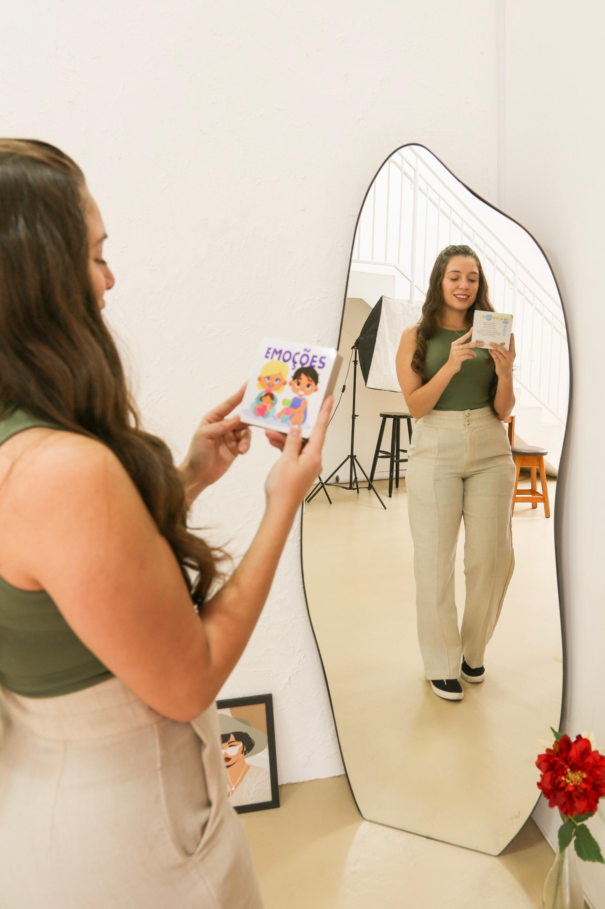

Psicóloga Eduarda Ferreira de Goes - CRP 08/45992
A psicoterapia é um convite ao autoconhecimento. Um espaço para compreender emoções, enfrentar desafios e encontrar novos caminhos com mais segurança e sentido.
“Quando não podemos mais mudar uma situação, somos desafiados a mudar nós mesmos.” Viktor Frankl
Conheça a profissional
Acredito que cada pessoa possui uma história única e que merece ser acolhida com respeito, sensibilidade e uma escuta verdadeiramente atenta.
Sou psicóloga clínica com atuação fundamentada na Logoterapia e Análise Existencial, oferecendo um espaço seguro para que crianças, adolescentes e adultos possam compreender seus desafios, fortalecer recursos internos e encontrar novos sentidos para sua trajetória.
Minha prática é orientada por uma psicologia humanizada, que considera o ser humano em sua singularidade. Mais do que aliviar sintomas, busco caminhar ao lado de cada paciente no processo de autoconhecimento, desenvolvimento emocional e construção de uma vida mais consciente e significativa.
No atendimento infantil, favoreço a expressão dos sentimentos e o fortalecimento dos vínculos familiares, respeitando as necessidades e particularidades de cada etapa do desenvolvimento.
Já no atendimento de adolescentes e adultos, ofereço um espaço de reflexão e acolhimento para questões como ansiedade, dificuldades nos relacionamentos, processos de mudança, luto, sofrimento emocional e outros desafios que fazem parte da experiência humana.
Atendimentos presenciais e online, sempre pautados pela ética, pelo respeito à história de cada pessoa e pela construção de um vínculo terapêutico seguro.

Logoterapia e Análise existencial
A Logoterapia é uma abordagem psicológica desenvolvida por Viktor Frankl, centrada na busca de sentido da vida.
Parte do princípio de que, mesmo diante do sofrimento, desafios e perdas, o ser humano pode encontrar significado, liberdade interior e caminhos possíveis.
Na prática clínica, a Logoterapia auxilia no fortalecimento emocional, no enfrentamento de crises crises existenciais e na construção de uma vida mais consciente e alinhada aos próprios valores.
A Logoterapia é chamada de "terapia do sentido", porque acredita que quando a pessoa descobre um "porquê", consegue enfrentar quase qualquer "como".
Formato das sessões
Entenda como é estruturado o processo terapêutico para garantir conforto, sigilo e praticidade.
É um momento de acolhimento mútuo. Serve para você apresentar sua demanda atual, tirarmos dúvidas sobre o funcionamento do processo e começarmos a desenhar o caminho terapêutico.
As sessões ocorrem semanalmente, com duração aproximada de 50 minutos. Essa constância é fundamental para o fortalecimento do vínculo e evolução do processo terapêutico.
Realizado através de videochamada segura e criptografada (como Google Meet), permitindo que você realize a sessão de qualquer lugar do Brasil com total sigilo e comodidade.
Todos os atendimentos são estritamente confidenciais, protegidos pelo Código de Ética Profissional do Psicólogo, garantindo a segurança de tudo o que for compartilhado.
Cada atendimento é único e adaptado às suas necessidades
A psicoterapia pode auxiliar na compreensão dos gatilhos, no manejo da ansiedade e no desenvolvimento de recursos para enfrentar os desafios do dia a dia com mais equilíbrio.
Um espaço de acolhimento para compreender o sofrimento, fortalecer recursos internos e reconstruir possibilidades de sentido diante da vida.
Fortalecimento da relação consigo mesmo, desenvolvimento da autoestima e construção de uma vida mais alinhada aos próprios valores.
Compreensão dos padrões relacionais, comunicação saudável e fortalecimento dos vínculos afetivos.
Acompanhamento em momentos de transição, escolhas importantes, crises existenciais e busca por propósito.
Espaço lúdico e acolhedor para favorecer a expressão dos sentimentos, o desenvolvimento emocional e o fortalecimento dos vínculos familiares.
O que dizem
"Estou com a Duda desde outubro do ano passado e, sem dúvida, já não sou a mesma pessoa. Ao longo desse tempo, ela tem me ajudado a enfrentar diferentes desafios do dia a dia com mais leveza, autoconhecimento e segurança. Além disso, o processo terapêutico tem sido essencial para lidar com as dificuldades e mudanças de morar fora do país. Em cada sessão, me sinto acolhida, ouvida e compreendida, sempre em um ambiente de confiança e sem julgamentos. Sou muito grata por todo o cuidado, profissionalismo e dedicação da Duda. Recomendo de coração o trabalho dela para qualquer pessoa que esteja buscando um acompanhamento psicológico humano, sensível e transformador. ❤️"
"Desde novembro de 2025 faço terapia com a Eduarda, por orientação do meu psiquiatra, que recomendou a Terapia. Iniciei esse processo em busca de melhora e, olhando para trás, vejo o quanto foi uma decisão importante. Ao longo desses meses, ouvi com atenção cada orientação e procurei colocá-las em prática. Hoje consigo enxergar minha evolução nas pequenas e grandes atitudes do dia a dia. Ainda estou em processo, mas sinto que, aos poucos, vou melhorando aqui e ali, e isso me faz muito feliz. Lembro que, durante muitos meses, eu passava praticamente todas as sessões chorando. Hoje me sinto outra mulher: mais forte, mais consciente e muito mais feliz. Minha gratidão à Eduarda pelo atendimento impecável. Sempre pontual, acolhedora, respeitosa, humana e extremamente profissional. Obrigada por me acompanhar com tanta dedicação e por fazer parte da minha caminhada de transformação. Sua competência e cuidado fizeram toda a diferença na minha vida."
"Gostaria de expressar minha profunda gratidão à essa excelente profissional que é a Eduarda, por todo o carinho, dedicação e profissionalismo com que acompanha meu filho. Seu trabalho tem feito uma diferença muito importante na vida dele. Obrigada por acolher, orientar e contribuir com tanto cuidado para o seu desenvolvimento. Que Deus continue abençoando sua missão e seu excelente trabalho. Com carinho,"
Se você sente que este pode ser o momento de iniciar a psicoterapia, entre em contato. Ficarei feliz em esclarecer suas dúvidas e explicar como funciona o processo terapêutico.
“A psicoterapia é um caminho de retorno para si mesmo.”